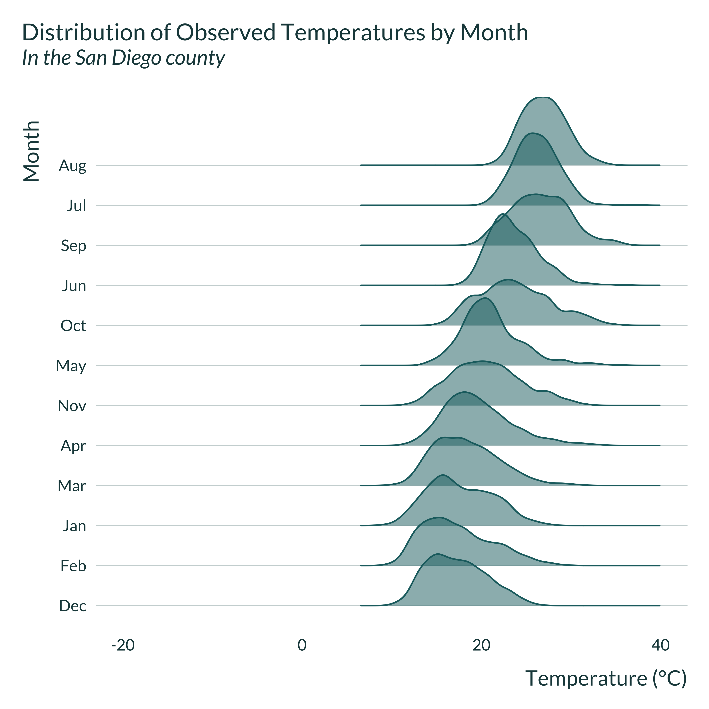

In this document, I run a simulation exercise to illustrate that, under some circumstances, adding fixed effects to a model can lead to a loss in power and inflated effect sizes. To make these simulations realistic, I emulate a typical study estimating the impact of high temperatures on worker productivity.
As discussed in the introduction of the paper and the math section, controlling for confounders can cause a confounding / exaggeration trade-off mediated by the proportion of the variation absorbed by the controls. Adjusting for a variable (\(w\)) or adding fixed effects is equivalent to partialling out this variable or fixed effects from both \(x\) and \(y\). Since the variance of the estimator is given by the ratio of the variance of the residuals \(\sigma_{y^{\perp x, w}}^2\) over \(n\) times the variance of the explanatory variable after partialling out \(w\) (\(\sigma_{x^{\perp w}}^2\)), if controlling absorbs more of the variance in \(x\) than in \(y\), it will increase the variance of the resulting estimator and create exaggeration.
To illustrate this causal exaggeration and show that it can arise in realistic settings, let’s consider an example setting: the impact of high temperatures on worker productivity. This setting might be particularly relevant as time and location fixed-effects are likely more correlated with temperature than with residual productivity. In addition, since this type of analysis focuses on effects in the tail of the temperature distribution, we may expect statistical power to be low: only a small subset of the observations contribute to the estimation of the treatment effect.
Lai et al. (2023) reviews this literature. Somanathan et al. (2021) and LoPalo (2023) have explored this question in the context of manufacturing in India and production of data for Demographic and Health Surveys (DHS) in a large range of countries respectively. Other examples of studies that leverage micro-data at the worker level study the impacts of high temperature on blueberry picking in California Stevens (2017), factory worker productivity in China (Cai, Lu, and Wang 2018), archers in China Qiu and Zhao (2022) or errors made by tennis players (Burke et al. 2023). Other studies also leverage micro-data to study the impact of temperature on productivity but at the firm-level (2012)
In the present analysis, I build my simulations to emulate a canonical study from this literature, measuring the impact of high temperature on worker productivity. A typical approach consists in estimating the link between different temperature bins and productivity, focusing in particular on high temperature bins. Usual approaches to explore this question typically rely on High Dimensional Fixed Effects models, including time and location fixed-effects to adjust for invariant characteristics such as seasonal demand (in Somanathan et al. (2021) and Cai, Lu, and Wang (2018) for instance) or location differences. As underlined by LoPalo (2023), fixed effects limit the variation used for identification: location “fixed effects restrict the variation used in the analysis to variation within a survey wave [i.e., a time ”period”]”.
To simplify and since negative effects of temperature on production are only found for high temperatures, in the DGP, I assume that only high temperatures affect productivity (the effect of low temperatures therefore does not need to be modeled). For simplicity, I only consider time fixed-effects and abstract from location ones. This is equivalent to assuming that all the individuals in the analysis work in locations that experience the same contemporaneous weather, e.g., are close to one another. Regardless, location fixed effect would be absorbed by the individual fixed-effects in include in the analysis.
The DGP can be represented using the following Directed Acyclic Graph (DAG), where \(InBin\) represents high temperatures within a given temperature bin of interest, such that \(InBin = \mathbb{1}\{Temp \in (T_L,T_H ] \}\) where \((T_L,T_H ]\) is the temperature bin of interest.
second_color <- str_sub(colors_mediocre[["four_colors"]], 10, 16)
dagify(Prod ~ InBin + Period + u + Indiv,
Temp ~ Period + e,
InBin ~ Temp,
exposure = c("Prod", "Temp", "InBin", "Period", "Indiv"),
# outcome = "w",
latent = c("u", "e"),
coords = list(
x = c(Prod = 3, Temp = 2, InBin = 2.5, Period = 2.5, e = 1.5, u = 3, Indiv = 3),
y = c(Prod = 1, Temp = 1, InBin = 1, Period = 0, e = 1, u = 1.5, Indiv = 0))
) |>
ggdag_status(text_size = 3.5) +
theme_dag_blank(base_family = "Lato", legend.position = "none") +
scale_mediocre_d(pal = "coty") +
annotate(#parameters
"text",
x = c(2.75, 2.8, 2.2),
y = c(1.1, 0.45, 0.45),
label = c("beta", "delta", "gamma"),
parse = TRUE,
color = "black",
size = 5
) Individual production (\(Prod\)) and temperature (\(Temp\)) depend on period fixed effects (\(Period\)), individual fixed effects (\(Indiv\)) and non-modeled components (\(u\) and \(e\)). Note that this DAG encompasses a set of further modeling choices, in particular regarding the absence of causal relationships between some variables.
Other variables than individual or period fixed effects and high temperatures may affect productivity (precipitation for instance). I do not model them to simplify the data generating process. While this may limit the representativity of my simulations, it does not affect its results since the models I consider accurately represent the data generating process. Including additional controls may however increase the precision of the resulting estimator. To address such concerns, I include individual fixed effects which intensity I can vary to adjust the non-explained variation in productivity. In addition, at the end of this document, I compare the Signal-to-Noise Ratios in my simulations to those in existing studies to confirm that my simulations are in line with existing studies in terms of precision.
I do not generate correlation between periods. While this may seem restrictive, it is a conservative assumption as it eases the recovery of the effect of interest by simplifying the actual DGP.
Finally, I assume that the effect of temperature on productivity is non-null in only one of the bins, as it is often the case in existing studies.
I assume that the temperature at time \(t\) in period \(\tau\) is defined as follows:
\[Temp_{t\tau} = \mu_{Temp} + \gamma\lambda_{\tau} + \epsilon_{t}\]
where \(\mu_{Temp}\) is an intercept representing the average temperature. \(\lambda_{\tau}\) are period fixed-effects with mean 0 and variance 1, such that their variance can be modified via \(\gamma\). This particular structure of fixed effects allows to control for the intensity of the fixed effects via a parameter. It assumes that the data generating process for temperature is as follows:
This is equivalent to assuming that the variance of temperature can be decomposed into a between-months component and a within-month one. This is quite representative of the distribution of existing temperatures, as discussed below. The same structure is retained for productivity.
\(Prod_{it\tau}\), the production of worker \(i\) at time \(t\) in period \(\tau\) is defined as:
\[Prod_{it\tau} = \beta_0 + \eta_i + \delta\lambda_{\tau} + \beta_1 \cdot \mathbb{1}\{Temp_{t\tau} \in (T_L,T_H ] \} + u_{it}\] where \(\eta_i\) are individual fixed-effects. \(\lambda_{\tau}\) are period (month) fixed-effects.
The goal of these simulations is to vary the proportion of the variation in temperature and production the period fixed-effect explain (i.e., to vary \(\gamma\) and \(\delta\) to modify the month-to-month variation in temperature and production). However, to make results across parameter sets comparable and these variations ceteris paribus, it is crucial that varying \(\gamma\) and \(\delta\) does not affect the variance of the temperature within the bin of interest and production (our \(x\) and \(y\) in the regression). I therefore fix the variance of temperature and productivity by defining the non-modeled variance, i.e., the variance of the residuals, as a function of \(\gamma\) and \(\delta\). Since the variance of interest for \(x\) is actually the variance within a bin and not temperature itself, I consider bins of interest that are closed. That way, the variance remains relatively stable when \(\gamma\) and \(\delta\) vary (it is very roughly equal to the variance of a uniform distribution defined over the width of the bin).
As discussed in the maths section of the paper, the omitted variable bias is also a function of \(\delta\) and \(\gamma\): \(OVB = \dfrac{\delta \gamma \sigma_{\lambda}^{2}}{\sigma_{InBin}^{2}}\). Thus, to keep the OVB constant when \(\gamma\) varies, I set \(\kappa = \delta\gamma\) to be fixed.
More precisely, I set:
I write a simple function that generates the data. It takes as input the values of the different parameters and returns a data frame containing all the variables for this analysis.
Note that I use the truncnorm package to compute the theoretical mean and variance of high temperature (as they are drawn from a truncated normal).
generate_data_fe <- function(N_i,
N_t,
length_period_fe,
mu_temp,
sigma_temp,
mu_prod,
sigma_prod,
sigma_indiv_fe,
bin_interest_low,
bin_ref_low,
beta_1,
gamma,
kappa) {
delta <- kappa/gamma
data <-
tibble(t = 1:N_t) |>
mutate(period = t %/% length_period_fe + 1) |>
group_by(period) |>
mutate(period_fe = runif(1, -sqrt(3), sqrt(3))) |>
# mutate(period_fe = 3*(rbeta(1, 0.5, 0.5) - 1/2)) |>
ungroup() |>
mutate(
sigma_epsilon = sqrt(sigma_temp^2 - gamma^2),
epsilon = rnorm(N_t, 0, sigma_epsilon),
temp = mu_temp + gamma*period_fe + epsilon,
bin_temp = cut(temp, breaks = c(-50, seq(11, 35, 2), 100)),
bin_temp = fct_relevel(bin_temp,
str_c("(", bin_ref_low, ",", bin_ref_low + 2,"]"),
after = 0),
bin_interest = str_c("(", bin_interest_low, ",", bin_interest_low + 2,"]")
) |>
crossing(indiv = 1:N_i) |>
group_by(indiv) |>
mutate(indiv_fe = rnorm(1, 0, sigma_indiv_fe)) |>
ungroup() |>
mutate(
sigma_u = sqrt(
sigma_prod^2
- sigma_indiv_fe^2
- delta^2
- beta_1^2*0.3 #roughly var of a uniform distribution of width 2
- 2*kappa*beta_1 #NEEDS TO BE CHANGED
),
u = rnorm(N_i*N_t, 0, sigma_u),
prod = mu_prod + beta_1*(bin_temp == bin_interest) +
indiv_fe + delta*period_fe + u
) |>
select(indiv, t, period, everything(), -starts_with("sigma"))
return(data)
}I set baseline values for the parameters to emulate a realistic observational study in this field. These values are coherent with several analyses from the literature. However, not all analyses in this literature suffer from the issue discussed here but some likely do. I focus on such settings. I thus calibrate the parameters as follows:
Number of observations: Burke et al. (2023) summarises the number of observations in recent papers from this literature (table S1): it ranges from 202 to 19 milions, with a median of 140,000. Somanathan et al. (2021), one of the most thorough papers in this literature. My simulation is closed to their “Temperature Effects on Worker Output†section in which the various specifications have between 9 and 147 units and between 365 and 3337 time steps for a number of observations ranging between 7300 and 54020. I select a number of observations in line with a typical analysis in this paper and literature, setting \(N_i = 70\) and \(N_t = 700\), for a total of 49000 observations.
Distribution of the production: I consider that production is normally distributed. Stevens (2017) reports the distribution of the average productivity by worker (blueberry pickers) in Figure 3. While the distribution is not perfectly normal, it seems to be a relatively reasonable assumption. Production is a function of the way units are defined; any mean may be realistic. The value of interest is the ratio mean/standard deviation. In LoPalo (2023), this ratio is roughly equal to 0.9. In Stevens (2017), it ranges between 0.4 and 0.6 (Table 1). To avoid negative values considering the normality assumption, I choose an intermediary value and set mu_prod = 100 and sigma_prod = 0.5*mu_prod.
Individual fixed effects: LoPalo (2023) reports the individual FEs observed in their setting in figure 7 panel A. The distribution is not exactly normal but it might be an acceptable approximation. In their setting, individual fixed effects account for about half of the standard deviation of the outcome. I thus set sigma_indiv_fe = 0.5*sigma_prod. I set their mean to 0, assuming that it is encompassed in \(\beta_0\).
Distribution of temperature: I set the mean and standard deviation of the wet bulb temperature to be equal to the values experienced in New York City. I set mu_temp = 16.5 and sigma_temp = 9. The results hold with other distributions of temperature.
Results from the literature: Somanathan et al. (2021) documents a reduction in productivity between 2 and 8% when a day below 19°C is swapped with a day above 35°C dry bulb (and comparable results between 33 and 35). LoPalo (2023) finds that productivity decreases by 13.6% on a day with wet bulb temperature above 29.5°C as compared to a day between 10 and 15.5°C. Stevens (2017) documents a 12% reduction in productivity when a day in the (27, 29.5]°C bin is swapped with a day above 38°C. Cai, Lu, and Wang (2018) a 8.5% reduction in temperature above 35°C wet bulb as compared to a day between 24°C and 26.5°C. Hsiang (2010) finds effects above 25°C in wet bulb temperature.
bin_interest_low = 29.bin_ref_low = 11.beta_1 = -0.03*mu_prodTemperature fixed effects: As noted previously, gamma cannot be larger than sigma_temp. I will thus vary it between 4 and 8.9.
Omitted variable bias: I consider a very large OVB, twice the magnitude of the treatment effect (OVB = 2). The OVB is given by \(\dfrac{\kappa\sigma_{\lambda}^2}{\sigma_{InBin}^2}\). Therefore, I set kappa = -15. I also adjust it post-hoc since it only changes the bias of the estimator from the model with no fixed effects. The minus sign ensures that the OVB is upward biased and therefore goes in the same direction as exaggeration. This hypothesis clarifies the results but does not change the conclusions of the analysis.
| N_i | N_t | length_period_fe | mu_temp | sigma_temp | mu_prod | sigma_prod | bin_interest_low | bin_ref_low | sigma_indiv_fe | beta_1 | gamma | kappa |
|---|---|---|---|---|---|---|---|---|---|---|---|---|
| 70 | 700 | 30 | 17.5 | 9 | 100 | 50 | 29 | 11 | 25 | -4 | 7.4 | -15 |
Here is an example of data created with the data generating process and baseline parameter values, for 4 individuals and 2 period of 1 time steps each:
| indiv | t | period | period_fe | epsilon | temp | bin_temp | bin_interest | indiv_fe | u | prod |
|---|---|---|---|---|---|---|---|---|---|---|
| 1 | 1 | 2 | -1.49 | 8.08 | 14.54 | (13,15] | (29,31] | -23.00 | -26.25 | 53.77 |
| 2 | 1 | 2 | -1.49 | 8.08 | 14.54 | (13,15] | (29,31] | -49.94 | -4.45 | 48.63 |
| 3 | 1 | 2 | -1.49 | 8.08 | 14.54 | (13,15] | (29,31] | -6.81 | 17.89 | 114.10 |
| 4 | 1 | 2 | -1.49 | 8.08 | 14.54 | (13,15] | (29,31] | -7.88 | -32.50 | 62.64 |
| 1 | 2 | 3 | 1.10 | -4.90 | 20.75 | (19,21] | (29,31] | -23.00 | -54.07 | 20.70 |
| 2 | 2 | 3 | 1.10 | -4.90 | 20.75 | (19,21] | (29,31] | -49.94 | -32.58 | 15.25 |
| 3 | 2 | 3 | 1.10 | -4.90 | 20.75 | (19,21] | (29,31] | -6.81 | 0.50 | 91.46 |
| 4 | 2 | 3 | 1.10 | -4.90 | 20.75 | (19,21] | (29,31] | -7.88 | -6.37 | 83.52 |
I quickly explore a generated data set to get a sense of how the data is distributed and to make sure that the calibration has been done properly.
ex_data_fe <- baseline_param_fe |>
pmap(generate_data_fe) |>
list_rbind()
vars_of_interest <- c("prod", "temp", "indiv_fe", "period_fe", "u", "epsilon")
ex_data_fe |>
pivot_longer(cols = vars_of_interest) |>
ggplot(aes(x = value)) +
geom_histogram(bins = 20) +
# geom_density() +
facet_wrap(~ name, scales = "free") +
labs(
title = "Distribution of the variables in the data set",
x = "Variable value",
y = "Density"
) #table
means <- ex_data_fe |>
reframe(across(
.cols = vars_of_interest,
\(x) mean(x, na.rm = TRUE)
)) |>
mutate(metric = "Mean", .before = 1)
sds <- ex_data_fe |>
reframe(across(
.cols = vars_of_interest,
\(x) sd(x, na.rm = TRUE)
)) |>
mutate(metric = "Sd", .before = 1)
bind_rows(means, sds) |>
kable()| metric | prod | temp | indiv_fe | period_fe | u | epsilon |
|---|---|---|---|---|---|---|
| Mean | 95.47995 | 18.360584 | -4.168381 | 0.1376458 | 0.1330608 | -0.1579947 |
| Sd | 49.32695 | 9.000084 | 25.927697 | 0.9876026 | 41.8476039 | 4.8571961 |
This looks like the desired distributions as well as do the means and standard deviations. Note that the mean of the individual fixed effects is not perfectly 0 but they are negligible as compared to the means of the other variables and as compared to their standard deviations.
I then check that the distribution of temperature and its yearly variations are sensible and that they are consistent with distributions observed in actual settings.
First, I explore the distribution of temperature month by month for a simulated data set, for the two extreme values of gamma considered. I define month by grouping periods into 12 groups, based on the value of their fixed effects.
graph_ridge_sim <- function(gamma_plot) {
baseline_param_fe |>
mutate(gamma = gamma_plot, N_i = 1, N_t = 10000) |>
pmap(generate_data_fe) |>
list_rbind() |>
mutate(gamma = gamma_plot) |>
group_by(period = as.factor(period)) |>
mutate(mean_temp = mean(temp)) |>
ungroup() |>
arrange(mean_temp) |>
nest(nst = -period) |>
mutate(month = cut_number(row_number(), n = 12, labels = FALSE)) |>
unnest(nst) |>
# arrange(mean_temp) |>
ggplot(aes(x = temp, y = as_factor(month))) +
ggridges::geom_density_ridges(
fill = colors_mediocre[["base"]],
color = colors_mediocre[["base"]],
alpha = 0.5
) +
xlim(c(-20, 50)) +
labs(
title = "Distribution of Generated Temperatures by Month",
subtitle = paste(
"For gamma =", gamma_plot, ", ie",
round(gamma_plot^2/baseline_param_fe$sigma_temp^2, 3)*100, "%",
"of variance from month-to-month variation"),
x = "Temperature (°C)",
y = "Month Index"
)
}
graph_ridge_sim(8.6) graph_ridge_sim(4)Then, I compare these generated distribution to some observed in actual settings. To do so, I retrieve wet bulb temperature data in the US from Spangler, Liang, and Wellenius (2022). I wrangle it and focus San Diego and New York counties. I pick these counties because they respectively exhibit large and small variations in month-to-month temperature. Many other counties exhibit similar patterns.
fips_interest <- tibble(
county_name = c("New York", "San Diego"),
fips = c("36061", "06073")
)
temp_data <- readRDS(here("misc", "temp_data.Rds")) |>
as_tibble() |>
janitor::clean_names() |>
# filter(year > 2015) |>
select(fips = st_co_fips, date, tmax_c, wbg_tmax_c) |>
mutate(
month = month(date),
year = year(date)
) |>
group_by(month, fips) |>
mutate(mean_wbg = mean(wbg_tmax_c, na.rm = TRUE)) |>
ungroup()
small_temp_data <- temp_data |>
right_join(fips_interest, by = join_by(fips))
saveRDS(small_temp_data, here("Outputs", "small_temp_data.RDS"))small_temp_data <- readRDS(here("Outputs", "small_temp_data.RDS"))
graph_ridge_actual <- function(data, county) {
data |>
filter(county_name == county) |>
group_by(fips) |>
mutate(
month = month(month, label = TRUE) |>
fct_reorder(mean_wbg)
) |>
ungroup() |>
ggplot(aes(x = tmax_c, y = month)) +
ggridges::geom_density_ridges(
fill = colors_mediocre[["base"]],
color = colors_mediocre[["base"]],
alpha = 0.5
) +
xlim(c(-20, 40)) +
labs(
title = "Distribution of Observed Temperatures by Month",
subtitle = paste("In the", county, "county"),
x = "Temperature (°C)",
y = "Month"
)
}
small_temp_data |>
graph_ridge_actual("New York") small_temp_data |>
graph_ridge_actual("San Diego")
The simulated distributions are not perfectly similar to the observed ones but display comparable features: the month-to-month variation in temperature in New York county is important while it is limited in San Diego county. While the simulations are not perfectly realistic, they reproduce patterns observed in actual settings, even just within the US1.
I then define a function to run the estimations (with and without fixed effects).
estimate_fe <- function(data) {
reg_fe <-
feols(
data = data,
fml = prod ~ bin_temp | period + indiv,
cluster = ~ indiv
) |>
broom::tidy() |>
mutate(model = "fe")
reg_no_fe <-
feols(
data = data,
fml = prod ~ bin_temp | indiv,
cluster = ~ indiv
) |>
broom::tidy() |>
mutate(model = "no_fe")
bind_rows(reg_fe, reg_no_fe) |>
filter(term == str_c("bin_temp", unique(data$bin_interest))) |>
rename(p_value = p.value, se = std.error) |>
mutate(#to check that the variance of x and y do not vary with gamma
var_in_bin = data |>
filter(bin_temp == unique(data$bin_interest)) |>
pull(temp) |>
var(na.rm = TRUE),
var_prod = var(data$prod, na.rm = TRUE)
)
}Here is an example of an output of this function:
| term | estimate | se | statistic | p_value | model | var_in_bin | var_prod |
|---|---|---|---|---|---|---|---|
| bin_temp(29,31] | -2.331272 | 1.437131 | -1.622172 | 0.1093274 | fe | 0.4053075 | 2519.402 |
| bin_temp(29,31] | -5.773004 | 1.251857 | -4.611552 | 0.0000178 | no_fe | 0.4053075 | 2519.402 |
We can now run a simulation, combining generate_data_fe and estimate_fe. To do so I create the function compute_sim_fe.
compute_sim_fe <- function(...) {
generate_data_fe(...) |>
estimate_fe() |>
suppressMessages() |>
bind_cols(as_tibble(list(...))) #add parameters used for generation
} Here is an example of an output of this function.
| term | estimate | se | statistic | p_value | model | var_in_bin | var_prod | N_i | N_t | length_period_fe | mu_temp | sigma_temp | mu_prod | sigma_prod | bin_interest_low | bin_ref_low | sigma_indiv_fe | beta_1 | gamma | kappa |
|---|---|---|---|---|---|---|---|---|---|---|---|---|---|---|---|---|---|---|---|---|
| bin_temp(29,31] | -3.528378 | 1.256971 | -2.807048 | 0.0064942 | fe | 0.2729781 | 2270.595 | 70 | 700 | 30 | 17.5 | 9 | 100 | 50 | 29 | 11 | 25 | -4 | 7.4 | -15 |
| bin_temp(29,31] | -5.787941 | 1.227412 | -4.715566 | 0.0000122 | no_fe | 0.2729781 | 2270.595 | 70 | 700 | 30 | 17.5 | 9 | 100 | 50 | 29 | 11 | 25 | -4 | 7.4 | -15 |
I run the simulations for different sets of parameters by looping the compute_sim_fe function over the set of parameters. I thus create a table with all the values of the parameters to test, param_fe. Note that in this table each set of parameters appears n_iter times as we want to run the analysis \(n_{iter}\) times for each set of parameters.
I then run the simulations by looping our compute_sim_fe function on param_fe using the purrr package (pmap function).
First, I quickly explore the results. I plot the distribution of the estimated effect sizes.
sim_fe <- readRDS(here("Outputs", "sim_fe.RDS"))
sim_fe |>
mutate(
signif = p_value < 0.05,
signif_name = ifelse(signif, "Significant", "Non-significant"),
model_name = ifelse(model == "fe", "FE", "No FE")
) |>
group_by(gamma, model) |>
mutate(
mean_signif = mean(ifelse(signif, estimate, NA), na.rm = TRUE),
mean_all = mean(estimate, na.rm = TRUE)
) |>
ungroup() |>
ggplot(aes(x = estimate/beta_1, fill = signif_name)) +
geom_histogram() +
geom_vline(xintercept = 1, linetype = "solid") +
geom_vline(
aes(xintercept = mean_all/beta_1),
linetype = "dashed"
) +
geom_vline(
aes(xintercept = mean_signif/beta_1),
linetype = "solid",
color = "#976B21"
) +
scale_x_continuous(breaks = scales::pretty_breaks(n = 6)) +
facet_grid(model_name ~ gamma, switch = "x") +
coord_flip() +
scale_y_continuous(breaks = NULL) +
labs(
title = "Distribution of FE estimates from 1000 simulated datasets",
subtitle = "Conditional on significativity",
x = expression(paste(frac("Estimate", "True Effect"))),
y = "Gamma",
fill = NULL
)The fixed effects estimator is unbiased and recover, on average, the true effect while the OVB one is biased and does not recovers it. However, since the distribution of the estimator widens with gamma (and power becomes low), conditioning on significance yield different results: including omitted fixed effects can create an exaggeration bias:
We want to compare \(\mathbb{E}\left[ \left| \frac{\widehat{\beta_{no FE}}}{\beta_1} | \text{signif} \right|\right]\) and \(\mathbb{E}\left[ \left| \frac{\widehat{\beta_{FE}}}{\beta_1} \right| | \text{signif} \right]\). The first term represents the bias and the second term represents the exaggeration ratio.
To do so, I use the function summmarise_sim defined in the functions.R file.
I scale the varying parameter (\(\gamma\)) so that the parameters of interest is more legible and is the proportion of the variation in temperature that is explained by the period fixed-effects.
source(here("functions.R"), echo = TRUE, local = knitr::knit_global())
> summarise_sim <- function(data, varying_params, true_effect) {
+ ungroup(summarise(group_by(data %>% mutate(signif = (p_value <=
+ 0.05 .... [TRUNCATED]
> summary_power <- function(data, lint_names = FALSE) {
+ summary_power <- round(summarise(data, median_exagg = median(type_m),
+ `3rd_qu .... [TRUNCATED] I then build the main graph of this analysis, describing
main_graph <- summary_sim_fe |>
mutate(
model_name = ifelse(model == "fe", "Fixed Effects", "No Fixed Effects")
) |>
ggplot(aes(x = prop_fe_var, y = type_m, color = model_name)) +
geom_line(linewidth = 1.2) +
scale_mediocre_d() +
scale_y_continuous(breaks = scales::pretty_breaks(n = 7)) +
labs(
x = "Proportion of the variance in X explained by the FEs",
y = expression(paste("Average ", frac("|Estimate|", "|True Effect|"))),
color = "Model"
)
main_graph +
labs(
title = "Evolution of bias with the correlation between X and FEs",
subtitle = "For statistically significant estimates, 1000 simulations",
) I quickly check that the variance of the dependent and independent variables do not vary with gamma:
| Gamma | Variance Temperature (in bin) | Variance Produciton |
|---|---|---|
| 6.0 | 0.32 | 2367.68 |
| 7.0 | 0.32 | 2369.99 |
| 8.0 | 0.32 | 2364.01 |
| 8.2 | 0.32 | 2373.17 |
| 8.4 | 0.32 | 2369.88 |
| 8.6 | 0.32 | 2371.78 |
| 8.8 | 0.31 | 2367.77 |
| 8.9 | 0.32 | 2367.72 |
I calibrated the simulations to emulate a typical study from this literature. To further check that the results are realistic, I compare the average Signal-to-Noise Ratio (SNR) of the simulations to the range of SNR of an existing study.
In Somanathan et al. (2021), the SNR (in table 2) varies between 0.17 and 3.75. In LoPalo (2023), in table 2, 3, 5 and A4, the SNR for the estimates of interest varies between 0.5 and 4 (and actually even 0.03 for South Asia in the heterogenity analysis). Stevens (2017) report SNR varying between 0.5 and 2.5 (in table 2).
The SNR for the FE model in my simulations are as follow:
| Median SNR | Exaggeration Ratio | |
|---|---|---|
| 0.44 | 3.09 | 1.09 |
| 0.60 | 2.92 | 1.09 |
| 0.79 | 2.63 | 1.17 |
| 0.83 | 2.40 | 1.22 |
| 0.87 | 2.28 | 1.25 |
| 0.91 | 2.01 | 1.41 |
| 0.96 | 1.43 | 1.76 |
| 0.98 | 1.18 | 2.28 |
My simulations therefore display SNRs that are in line with many of those observed in the literature.
Month-to-month variation is probably even more limited in other countries and settings.↩︎